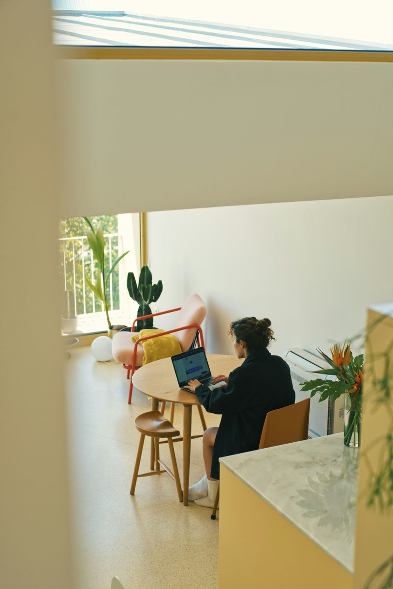

み
みなと
@minato_works
今日は家の吹き抜けスペースで在宅ワーク
午前中の光がちょうどよくて、作業がはかどる日。 サボテンと一緒に、締め切り前の資料をまとめています。 午後は少しだけ休憩して、コーヒーを淹れる予定。

午前中の光がちょうどよくて、作業がはかどる日。 サボテンと一緒に、締め切り前の資料をまとめています。 午後は少しだけ休憩して、コーヒーを淹れる予定。

このページは「あとでクリップ」の紹介用に作成したサンプル投稿です。人物・内容は架空のものです。